library(tidyverse)
library(skimr)
library(kableExtra)
library(sf)
library(plotly)
gesamtdaten <- readRDS(file.path(datenpfad, "gesamtdaten.rds"))
bip_zeitreihe <- readRDS(file.path(datenpfad, "bip_zeitreihe.rds"))
landkreise <- readRDS(file.path(datenpfad, "landkreise.rds")) # Geodaten (sf)
bundesland <- readRDS(file.path(datenpfad, "bundesland.rds")) # Geodaten (sf)Case-Study zur Arbeitslosigkeit in Deutschland
Teil 2: Beschreiben, visualisieren, Zusammenhänge erkennen
Rückblick und Ziele
Schätzfrage zum Einstieg
30 Sekunden, notieren Sie Ihren Tipp:
- Welcher Landkreis hatte 2024 die niedrigste Arbeitslosenquote Deutschlands?
- Welcher die höchste?
- Auf welchem Platz liegt Ulm?
Auflösung, sobald wir die Quote berechnet haben.
Tipp: Öffnen Sie die Folien jetzt schon auf Ihrem Laptop. Die Code-Felder (webR) laden im Hintergrund ca. 20 Sekunden.
Organisatorische Hinweise
- Viele Deadlines
- Ungewohntes Format (sehr technisch)
- GitHub, RStudio, R
- Arbeitsschritte mit GitHub (3. Problem Set von GitHub herunterladen und lösen)
Das ist alles neu, und das ist uns bewusst!
Warum das Ganze?
- Durch die Deadlines setzen Sie sich kontinuierlich mit dem Stoff auseinander
- GitHub, R, RStudio und Quarto brauchen Sie in den Projekten → Üben mit RTutor
- Visualisierung, Interpretation und Präsentation sind in den Projekten gefragt → Üben mit der Case-Study
- Arbeiten mit KI → lernen, wo Chat AI Ihre Arbeit sinnvoll ergänzt und wo nicht
Wo stehen wir?
Teil 1 (✔): Daten beschaffen, bereinigen, prüfen → ein Datensatz gesamtdaten mit einer Zeile je Landkreis.
Teil 2: Was steht eigentlich in den Daten? Zwei Sitzungen:
- Sitzung 1: Grundlagen → Überblick → Tabellen
- Sitzung 2: Grafiken → Karten → Zusammenhänge
Ziele:
- Daten beschreiben: Kennzahlen und Tabellen (
skimr,kableExtra) - Daten zeigen: Verteilungen, Zeitreihen, Karten (
ggplot2,sf,plotly) - Zusammenhänge mit Korrelationen quantifizieren
- Tabellen und Grafiken prüfen, egal ob von Ihnen oder von Chat AI
Das eigentliche Lernziel von Teil 2
Tabellen und Grafiken erstellen kann Chat AI in Sekunden. Sie sollen sie richtig lesen, ehrlich beschreiben und prüfen können. Die 🐛 Bug Hunts (Nr. 6–10, weiter gezählt ab Teil 1) sind deshalb oft keine Code-Fehler, sondern Denkfehler: falscher Nenner, falsche Formel, falsche Legende, falsche Interpretation.
Landkreis steht im Folgenden für Landkreise und kreisfreie Städte (Kreisebene). Im dritten RTutor Problem Set visualisieren Sie Daten zu Ländern auf europäischer Ebene.
Daten und Pakete laden
Wir laden die in Teil 1 erstellten Datensätze:
Im RStudio-Projekt case-study/ lautet der Pfad einfach datenpfad <- "data".
Grundlagen
Grundlagen → Überblick → Tabellen → Grafiken → Karten → Zusammenhänge
Nach diesem Abschnitt können Sie …
- eine Aussage als deskriptiv oder induktiv einordnen,
- die passenden Werkzeuge für eine bzw. zwei Variablen benennen,
- einen Boxplot lesen (Box, Whisker, Ausreißer).
Deskriptive vs. induktive Statistik
- Deskriptive (beschreibende) Statistik beschreibt den vorliegenden Datensatz
- Induktive (schließende) Statistik schließt von einer Stichprobe auf die Grundgesamtheit
Aber:
- Die Formel für den Mittelwert ist in beiden Fällen dieselbe
- Der Datensatz kann derselbe sein
Worin genau besteht dann der Unterschied?
Deskriptive Statistik
Deskriptiv
- Interesse gilt dem Datensatz selbst
- Beispiel: Arbeitslose aller Landkreise laut Arbeitsagentur (Vollerhebung)
- Darstellung als Tabelle oder Grafik
Induktiv
- Interesse gilt der Population, beobachtet ist nur eine (zufällige) Stichprobe
- Beispiel: Mikrozensus, eine Befragung zufällig ausgewählter Haushalte
- Typische Ziele: Vorhersage und kausale Zusammenhänge
In die induktive Statistik tauchen wir nächstes Semester tiefer ein.
Deskriptiv oder induktiv?
Handzeichen: deskriptiv ✋ oder induktiv ✌️?
- “Bremerhaven hatte 2024 eine höhere Arbeitslosenquote als die Stadt Bremen.”
- “Laut Mikrozensus ist der Anteil der Teilzeitbeschäftigten in Deutschland gestiegen.”
- “Landkreise in Ostdeutschland haben im Mittel eine höhere Arbeitslosenquote als in Westdeutschland.”
- “Eine Umfrage unter 300 Studierenden in Ulm zeigt: Studierende in Deutschland nutzen Chat AI täglich.”
Werkzeuge der deskriptiven Statistik
| Kennzahlen | Grafiken | |
|---|---|---|
| Univariat (eine Variable) | Mittelwert, Median, Standardabweichung, Quantile | Boxplot, Histogramm, Kerndichte |
| Bivariat (zwei Variablen) | Korrelationskoeffizient, Korrelationsmatrix | Streudiagramm |
Univariat: Überblick verschaffen, Eigenschaften einer Variablen aufzeigen.
Bivariat: Wenn sich eine Variable verändert, wie verändert sich die andere?
Einen Boxplot lesen
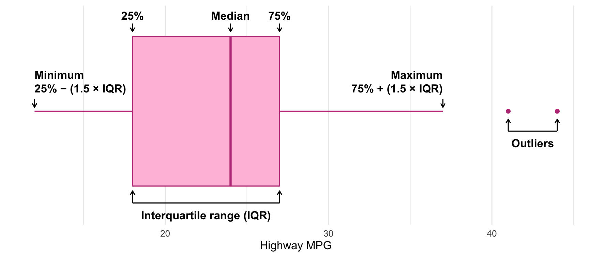
🔮 Prognose: Welcher Anteil der Beobachtungen liegt in der Box? Ab wann wird ein Punkt einzeln gezeichnet?
- Box = 25 %- bis 75 %-Quantil → die mittleren 50 %
- Whisker: bis max. 1,5 × Interquartilsabstand (IQR)
- Punkte weiter als 1,5 × IQR von der Box entfernt: einzeln gezeichnete Ausreißer
Überblick und Arbeitslosenquote
Grundlagen ✔ → Überblick → Tabellen → Grafiken → Karten → Zusammenhänge
Nach diesem Abschnitt können Sie …
- mit
skimrin Sekunden einen Überblick über einen Datensatz gewinnen, - fehlende Werte auf ihre Ursache zurückführen,
- prüfen, ob eine Kennzahl so definiert ist, wie Sie denken.
Arbeitslosenquote berechnen
Zuerst: Überblick gewinnen. Wie viele Landkreise haben wir? Wie sind Schulden, Arbeitslosigkeit und BIP verteilt?
Dafür brauchen wir zuerst die Arbeitslosenquote:
\[ \text{Arbeitslosenquote} = \frac{\text{Arbeitslose}}{\text{Erwerbstätige} + \text{Arbeitslose}} \times 100 \]
Ein erster schneller Blick
Quick and dirty: Wie viele Erwerbstätige und Einwohner hat Deutschland laut unseren Daten?
gesamtdaten |>
summarise(total_erw = sum(erw, na.rm = TRUE), total_einwohner = sum(Einwohner, na.rm = TRUE))# A tibble: 1 × 2
total_erw total_einwohner
<dbl> <dbl>
1 45987000 77277808Deutschland hat knapp 84 Mio. Einwohner. Wir kommen auf 77,3 Mio. Wer fehlt?
Wer fehlt?
gesamtdaten |>
filter(is.na(Einwohner) | is.na(alo_quote)) |>
select(Regionalschluessel, landkreis_name, Einwohner, erw, bip, alo_quote)# A tibble: 4 × 6
Regionalschluessel landkreis_name Einwohner erw bip alo_quote
<chr> <chr> <dbl> <dbl> <dbl> <dbl>
1 02000 Hamburg NA 1358514 162843535000 6.11
2 04011 Bremen NA 383383 36111353000 7.72
3 04012 Bremerhaven NA 61816 5156070000 12.8
4 11000 Berlin NA 2197430 208449010000 8.47Ist das eine Eigenschaft der Daten oder ein Fehler?
Eigenschaft der Daten: Einwohner kommt aus der Schuldenstatistik der Gemeinden. Die Schulden der Stadtstaaten sind Landesschulden und stehen dort nicht drin.
NA ist nicht automatisch ein Fehler. Aber Sie sollten für jedes NA sagen können, warum es da ist.
🔁 Erinnern Sie sich? Sonderfall Stadtstaaten
30 Sekunden, Handzeichen: In Teil 1 haben wir vor dem Merge stadtstaaten_als_kreis() eingefügt. Was wäre ohne diesen Schritt mit Hamburg und Berlin passiert?
(a) Fehlermeldung (b) Warnung (c) Die Zeilen fallen weg (d) BIP und Erwerbstätige werden still NA
(d): Im BIP-Datensatz heißen sie nur 02 und 11, in den Arbeitslosendaten 02000 und 11000. left_join() findet keinen Partner und meldet nichts.
Nach jedem Join: colSums(is.na()) und fragen, welche Zeilen NA sind. Fehlen bekannte, große Einheiten (Hamburg! Berlin!), ist es fast nie eine Eigenschaft der Daten.
Überblick mit skimr
Etwas besser als summarise(): skimr liefert für alle Variablen auf einmal einen Überblick.
Variable type: character
| skim_variable | n_missing | complete_rate | min | max | empty | n_unique | whitespace |
|---|---|---|---|---|---|---|---|
| landkreis_name | 0 | 1 | 3 | 32 | 0 | 378 | 0 |
400 Beobachtungen, aber nur 378 verschiedene Namen. Woher kommt das?
Zwei Mal “München”?
gesamtdaten |>
filter(landkreis_name %in% c("München", "Augsburg", "Würzburg")) |>
select(Regionalschluessel, landkreis_name, bundesland_name) |>
print(n = 6)# A tibble: 6 × 3
Regionalschluessel landkreis_name bundesland_name
<chr> <chr> <chr>
1 09162 München Bayern
2 09184 München Bayern
3 09663 Würzburg Bayern
4 09679 Würzburg Bayern
5 09761 Augsburg Bayern
6 09772 Augsburg Bayern 09162ist die Stadt München,09184der Landkreis München- Gleicher Name, anderer Regionalschlüssel → zwei Beobachtungen
- Das betrifft 44 Zeilen
Darum mergen wir immer über den Schlüssel, nie über Namen.
Stimmen die 400 Beobachtungen?
Wie viele Landkreise und kreisfreie Städte hat Deutschland?
- 294 Landkreise
- 106 kreisfreie Städte
- Zusammen: 400 ✔
Das ist Prüfschritt 7 der Checkliste aus Teil 1: eine Zahl, die Sie aus einer anderen Quelle kennen.
Die numerischen Variablen
gesamtdaten |>
select(alo_quote, Schulden_pro_kopf_lk, bip_pro_kopf) |>
skim_without_charts() |>
yank("numeric")Variable type: numeric
| skim_variable | n_missing | complete_rate | mean | sd | p0 | p25 | p50 | p75 | p100 |
|---|---|---|---|---|---|---|---|---|---|
| alo_quote | 0 | 1.00 | 5.61 | 2.09 | 1.88 | 4.00 | 5.44 | 6.90 | 14.46 |
| Schulden_pro_kopf_lk | 4 | 0.99 | 3223.38 | 2359.84 | 188.23 | 1660.58 | 2513.91 | 4041.37 | 18911.35 |
| bip_pro_kopf | 0 | 1.00 | 47951.45 | 19941.49 | 21480.73 | 36300.64 | 42721.06 | 52178.33 | 193293.12 |
5 Minuten, zu zweit: Wählen Sie eine Variable und beschreiben Sie sie in eigenen Worten: Mittelwert, Standardabweichung, Median. Was sagt das Verhältnis von Mittelwert zu Median?
Die Tabelle beschrieben
Arbeitslosenquote
- Mittelwert: 5,61 %
- SD: 2,09 Prozentpunkte → deutliche regionale Unterschiede
- Median: 5,44 % → nahe am Mittelwert, kaum extreme Ausreißer
Schulden pro Kopf
- Mittelwert: 3.223 €
- SD: 2.360 € → sehr hohe Streuung
- Median: 2.514 € → deutlich darunter: einige sehr hoch verschuldete Kreise ziehen den Mittelwert hoch
BIP pro Kopf
- Mittelwert: 47.951 €
- SD: 19.941 € → hohe Streuung
- Median: 42.721 € → darunter: einige sehr reiche Kreise (Wolfsburg, Ingolstadt, …)
Mittelwert deutlich über dem Median → rechtsschiefe Verteilung. Ein Histogramm zeigt das gleich auf einen Blick.
Auflösung: höchste und niedrigste Quote
- Platz 1 ist der Landkreis München (
09184), nicht die Stadt. Daher: immer über den Schlüssel! - Platz 2: Ulm. Merken Sie sich das. Gleich sehen wir, warum Ulm so gut dasteht.
Konsistenzcheck gegen die amtliche Quote
Die Bundesagentur für Arbeit meldet für 2024 eine Arbeitslosenquote von 6,0 % im Jahresdurchschnitt (Quelle: BA, Jahresrückblick 2024). Und wir?
# A tibble: 1 × 1
quote_deutschland
<dbl>
1 5.71Erst summieren, dann teilen (wie in Bug Hunt 4 aus Teil 1): 5,71 %. Nah dran, aber zu niedrig.
Woher kommt der Rest? Schauen wir uns den Nenner genauer an.
🐛 Bug Hunt 6: Mehr Erwerbstätige als Einwohner?
Unsere Quote: total_alo / (erw + total_alo). Hier das Verhältnis von Erwerbstätigen (erw) zu Einwohnern:
gesamtdaten |>
mutate(erw_je_ew = erw / Einwohner) |>
filter(!is.na(erw_je_ew)) |>
arrange(desc(erw_je_ew)) |>
select(landkreis_name, erw, Einwohner, erw_je_ew, alo_quote) |>
slice(c(1:3, (n() - 2):n())) |> # die drei höchsten und die drei niedrigsten
print(n = 6)# A tibble: 6 × 5
landkreis_name erw Einwohner erw_je_ew alo_quote
<chr> <dbl> <dbl> <dbl> <dbl>
1 Schweinfurt 66062 54193 1.22 2.98
2 Regensburg 168660 150678 1.12 2.37
3 Passau 55698 52974 1.05 3.15
4 Rhein-Pfalz-Kreis 44112 155807 0.283 7.68
5 Kusel 19470 69623 0.280 8.29
6 Südwestpfalz 23534 90294 0.261 8.882 Minuten, zu zweit: Wie kann ein Kreis mehr Erwerbstätige als Einwohner haben? Was bedeutet das für unsere Quote in Schweinfurt und in der Südwestpfalz?
🐛 Bug Hunt 6: Auflösung
- Arbeitslose werden am Wohnort gezählt, Erwerbstätige (VGR) am Arbeitsort
- Schweinfurt: viele Einpendler:innen → großer Nenner → Quote zu niedrig
- Südwestpfalz: viele Auspendler:innen (nach Pirmasens, Kaiserslautern) → kleiner Nenner → Quote zu hoch
Die Formel ist mathematisch richtig, aber Zähler und Nenner passen nicht zusammen. Die BA rechnet mit Erwerbspersonen am Wohnort. Diese Zahl haben wir auf Kreisebene nicht.
✍️ Jetzt Sie: der Pendler-Check
Wenden Sie das auf Baden-Württemberg an: erw_je_ew berechnen, absteigend sortieren. Wo liegen Ulm und der Alb-Donau-Kreis, der Ulm umschließt?
Hinweis
Absteigend sortieren mit arrange(desc(erw_je_ew)).
🐛 Bug Hunt 6: Was lernen wir?
- Unsere Quote ist eine Näherung: Für Städte und ihr Umland ist sie verzerrt, auch für die Stadtstaaten. Für große Regionen (Ost/West, Flächenländer) gleichen sich Ein- und Auspendler weitgehend aus.
- Dieselbe Verzerrung steckt in jeder Kennzahl, die Arbeitsort- und Wohnort-Größen mischt, z.B. im BIP pro Kopf.
Chat AI berechnet Ihnen jede Kennzahl, die Sie verlangen. Ob Zähler und Nenner zusammenpassen (gleiches Gebiet, gleiches Jahr, gleiche Zählweise), müssen Sie prüfen: Dokumentation der Quelle lesen.
Deskriptive Tabellen
Grundlagen ✔ → Überblick ✔ → Tabellen → Grafiken → Karten → Zusammenhänge
Nach diesem Abschnitt können Sie …
- Kennzahlen je Gruppe mit
group_by()undsummarise()berechnen, - eine Tabelle mit
kableExtraansprechend gestalten, - prüfen, ob eine Kennzahl das misst, was in der Überschrift steht.
Arbeitslosenquote auf Bundeslandebene
Gibt es deutliche Unterschiede zwischen den Bundesländern? Wir aggregieren die Landkreise je Bundesland.
🔮 Prognose: Welches Bundesland hat die höchste mittlere Arbeitslosenquote? Und wo landet Baden-Württemberg?
Vom Tibble zur Tabelle
bula_data |>
arrange(mean_alo) |>
kbl(col.names = c("Bundesland", "Mittelwert", "SD", "Median"),
digits = 2, format.args = list(decimal.mark = ",")) |>
kable_styling(font_size = 14) |>
kable_paper(full_width = FALSE) |>
row_spec(c(8, 9, 10, 12, 13), bold = TRUE, color = "white", background = "#BBBBBB") |>
add_header_above(c(" " = 1, "Arbeitslosenquote" = 3)) |>
footnote(general = "Die ostdeutschen Bundesländer sind grau hinterlegt.",
general_title = "Bitte beachten: ")| Funktion | macht … |
|---|---|
kbl() |
Tibble → HTML-Tabelle, Spaltennamen, Rundung |
kable_styling() |
Schriftgröße, Layout |
row_spec() |
einzelne Zeilen hervorheben |
add_header_above() |
Überschrift über mehrere Spalten |
footnote() |
Fußnote |
Das Ergebnis sehen Sie auf der nächsten Folie.
🐛 Bug Hunt 7: Was stimmt nicht?
Das ist der Code von eben. Er stammt aus der Vorlesung im letzten Jahr und lief damals einwandfrei. Dieses Jahr läuft er auch: ohne Fehler, ohne Warnung.
2 Minuten, zu zweit: Lesen Sie die Fußnote und dann die grauen Zeilen. Was ist falsch? Warum war es letztes Jahr richtig?
| Bundesland | Mittelwert | SD | Median |
|---|---|---|---|
| Bayern | 3,60 | 0,80 | 3,51 |
| Baden-Württemberg | 4,10 | 0,83 | 4,12 |
| Hessen | 5,50 | 1,28 | 5,61 |
| Rheinland-Pfalz | 5,84 | 1,52 | 5,68 |
| Schleswig-Holstein | 5,98 | 0,80 | 6,12 |
| Hamburg | 6,11 | NA | 6,11 |
| Niedersachsen | 6,18 | 1,77 | 6,37 |
| Saarland | 6,33 | 1,85 | 5,89 |
| Sachsen | 6,47 | 0,88 | 6,27 |
| Thüringen | 6,68 | 1,64 | 6,12 |
| Brandenburg | 7,06 | 1,63 | 7,19 |
| Nordrhein-Westfalen | 7,36 | 2,33 | 6,94 |
| Mecklenburg-Vorpommern | 7,94 | 1,20 | 8,26 |
| Sachsen-Anhalt | 8,09 | 1,48 | 7,89 |
| Berlin | 8,47 | NA | 8,47 |
| Bremen | 10,24 | 3,56 | 10,24 |
| Bitte beachten: | |||
| Die ostdeutschen Bundesländer sind grau hinterlegt. |
🐛 Bug Hunt 7: Prüfung
In welchen Zeilen stehen die ostdeutschen Länder wirklich?
bula_tabelle |>
mutate(zeile = row_number()) |>
filter(bundesland_name %in% ost_laender) |>
select(zeile, bundesland_name, mean_alo) |>
print(n = 5)# A tibble: 5 × 3
zeile bundesland_name mean_alo
<int> <chr> <dbl>
1 9 Sachsen 6.47
2 10 Thüringen 6.68
3 11 Brandenburg 7.06
4 13 Mecklenburg-Vorpommern 7.94
5 14 Sachsen-Anhalt 8.09row_spec(c(8, 9, 10, 12, 13))war per Hand abgezählt.- Durch die Stadtstaaten-Korrektur steht Hamburg jetzt auf Platz 6, alles darunter verschiebt sich.
- Dieselbe Falle wie in Teil 1:
sheet_names[7:19],[1:7],data_alo[-c(1, 2), ].
Nie per Hand abzählen. Zeilen und Spalten über ihren Inhalt auswählen, nicht über ihre Position.
✍️ Jetzt Sie: Bug Hunt 7 reparieren
bula_tabelle ist die sortierte Tabelle, ost_laender der Vektor mit den fünf ostdeutschen Ländern. Berechnen Sie ost_zeilen so, dass sie immer stimmen, egal wie die Tabelle sortiert ist.
Hinweis
which() gibt die Positionen zurück, an denen eine Bedingung TRUE ist. Die Bedingung: bula_tabelle$bundesland_name %in% ost_laender.
Die korrigierte Tabelle
Arbeitslosenquote |
|||
|---|---|---|---|
| Bundesland | Mittelwert | SD | Median |
| Bayern | 3,60 | 0,80 | 3,51 |
| Baden-Württemberg | 4,10 | 0,83 | 4,12 |
| Hessen | 5,50 | 1,28 | 5,61 |
| Rheinland-Pfalz | 5,84 | 1,52 | 5,68 |
| Schleswig-Holstein | 5,98 | 0,80 | 6,12 |
| Hamburg | 6,11 | NA | 6,11 |
| Niedersachsen | 6,18 | 1,77 | 6,37 |
| Saarland | 6,33 | 1,85 | 5,89 |
| Sachsen | 6,47 | 0,88 | 6,27 |
| Thüringen | 6,68 | 1,64 | 6,12 |
| Brandenburg | 7,06 | 1,63 | 7,19 |
| Nordrhein-Westfalen | 7,36 | 2,33 | 6,94 |
| Mecklenburg-Vorpommern | 7,94 | 1,20 | 8,26 |
| Sachsen-Anhalt | 8,09 | 1,48 | 7,89 |
| Berlin | 8,47 | NA | 8,47 |
| Bremen | 10,24 | 3,56 | 10,24 |
| Bitte beachten: | |||
| Berlin und Hamburg bestehen aus nur einem Kreis, daher keine SD. | |||
| 1 Die ostdeutschen Bundesländer sind grau hinterlegt. | |||
Was ist hier eine Beobachtung? Und was lernen wir aus der Tabelle?
- Süden: Bayern und Baden-Württemberg im Mittel um 4 % oder darunter, mit geringer Streuung
- Alle ostdeutschen Länder über 6,4 %
- Aber: NRW (7,4 %) liegt im Ost-Bereich und hat die höchste Streuung der Flächenländer (2,33): Ruhrgebiet vs. Münsterland
- Median meist nahe am Mittelwert
🔁 Wiedersehen mit Bug Hunt 4 (Teil 1): Bremen
Laut Tabelle hat Bremen die höchste Arbeitslosenquote: 10,2 %. Das Land Bremen besteht aus zwei Kreisen:
gesamtdaten |>
filter(bundesland_name == "Bremen") |>
select(landkreis_name, total_alo, erw, alo_quote)# A tibble: 2 × 4
landkreis_name total_alo erw alo_quote
<chr> <dbl> <dbl> <dbl>
1 Bremen 32077. 383383 7.72
2 Bremerhaven 9039. 61816 12.8 2 Minuten: Ist 10,2 % die Arbeitslosenquote des Landes Bremen? Wie hoch ist sie wirklich? Woher kennen Sie das Problem?
🔁 Bremen: Prüfung
mean(alo_quote) ist das Mittel aus Bremen (7,7 %) und Bremerhaven (12,8 %), obwohl Bremen sechsmal so viele Erwerbstätige hat. Die Quote des Landes: erst summieren, dann teilen.
gesamtdaten |>
group_by(bundesland_name) |>
summarise(mittel_kreise = mean(alo_quote),
quote_land = sum(total_alo) / sum(erw + total_alo) * 100) |>
arrange(desc(abs(quote_land - mittel_kreise))) |>
print(n = 4)# A tibble: 16 × 3
bundesland_name mittel_kreise quote_land
<chr> <dbl> <dbl>
1 Bremen 10.2 8.45
2 Hessen 5.50 5.12
3 Saarland 6.33 6.67
4 Thüringen 6.68 6.34
# ℹ 12 more rowsBeide Zahlen sind richtig gerechnet, sie beantworten nur verschiedene Fragen: “Wie geht es dem durchschnittlichen Landkreis?” vs. “Wie hoch ist die Quote im Land?” Der Fehler ist, die eine zu berechnen und die andere in die Überschrift zu schreiben.
Faustregel: Ob das Mittel der Kreise über oder unter der Landesquote liegt, hängt davon ab, ob die großen Kreise eine niedrige oder hohe Quote haben. In Bremen hat die große Stadt die niedrigere Quote → das Mittel ist zu hoch.
✍️ Jetzt Sie: die Länderquote
Berechnen Sie je Bundesland quote_land (gewichtet: Summen, dann teilen) und mittel_kreise (ungewichtet), sowie deren Differenz diff. Sortieren Sie nach diff.
Hinweis
Die Quote eines Landkreises ist total_alo / (erw + total_alo) * 100. Für das Land: dieselbe Formel, aber mit sum() um Zähler und Nenner.
Ost und West
Die Tabelle legt nahe: Der Unterschied verläuft zwischen Ost und West. Dafür eine neue Variable:
🔮 Prognose: Wohin gehört Berlin? Was würden Sie entscheiden, und warum?
Wir ordnen Berlin Westdeutschland zu: Ost- und Westberlin sind in den Daten nicht getrennt. Wichtig ist nicht welche Entscheidung, sondern dass sie dokumentiert ist (Fußnote!).
Ost und West im Vergleich
ost_west <- gesamtdaten |>
group_by(ost_name) |>
summarise(mean = mean(alo_quote), sd = sd(alo_quote),
min = min(alo_quote), p25 = quantile(alo_quote, 0.25),
median = median(alo_quote), p75 = quantile(alo_quote, 0.75),
max = max(alo_quote), n = n())
ost_west |>
kbl(col.names = c("", "Mittelwert", "SD", "Min.", "P25", "Median", "P75", "Max.", "n"), digits = 2,
format.args = list(decimal.mark = ",")) |>
kable_styling(font_size = 16) |>
add_header_above(c(" " = 1, "Arbeitslosenquote der Landkreise" = 7, " " = 1)) |>
footnote(general = "Berlin ist Westdeutschland zugeordnet.", general_title = "Bitte beachten: ")Arbeitslosenquote der Landkreise |
||||||||
|---|---|---|---|---|---|---|---|---|
| Mittelwert | SD | Min. | P25 | Median | P75 | Max. | n | |
| Ostdeutschland | 7,13 | 1,55 | 4,17 | 6,03 | 7,02 | 8,00 | 11,61 | 75 |
| Westdeutschland | 5,26 | 2,05 | 1,88 | 3,67 | 4,73 | 6,45 | 14,46 | 325 |
| Bitte beachten: | ||||||||
| Berlin ist Westdeutschland zugeordnet. | ||||||||
3 Min., zu zweit: Beschreiben Sie die Tabelle in drei Sätzen, einer davon mit einem Quantil.
Ost und West: beschrieben
- Mittelwert im Osten 1,9 Prozentpunkte höher (7,13 % vs. 5,26 %)
- Streuung im Westen größer (SD 2,05 vs. 1,55): Der Westen reicht von München bis Gelsenkirchen
- Westen: Median (4,73 %) deutlich unter dem Mittelwert → einige Kreise mit sehr hoher Quote ziehen ihn hoch; Osten: Median ≈ Mittelwert
- Quantile: Drei Viertel der ostdeutschen Kreise liegen über 6,03 %, drei Viertel der westdeutschen unter 6,45 %
- Selbst der beste ostdeutsche Kreis (4,17 %, Dahme-Spreewald) liegt unter dem westdeutschen Median
Große Unterschiede zwischen Ost und West, aber auch innerhalb des Westens.
Eine Tabelle mit Arbeitslosigkeit, BIP und Schulden je Bundesland finden Sie im Anhang und in der ausformulierten Case-Study.
📱 Kahoot-Checkpoint 1: Überblick und Tabellen

kahoot.it · PIN am Beamer
10 Fragen, ca. 8 Minuten. Diesmal müssen Sie nachdenken, nicht nur wiedererkennen.
- deskriptiv oder induktiv?
- Boxplot, Mittelwert vs. Median, Quantile
- Der stille Join und wie man ihn findet
- Bug Hunt 6: Wohnort vs. Arbeitsort
- Bug Hunt 7: feste Zeilennummern
- Bremen: Mittel der Kreise vs. Quote des Landes
Ende von Sitzung 1
Heute: Daten beschreiben und prüfen: skimr, Tabellen, Kennzahlen je Gruppe.
Bis zur nächsten Sitzung:
- Abschnitt Deskriptive Analysen der ausformulierten Case-Study lesen
- Anhang “Zum Selbststudium” am Ende dieser Folien: Stadtstaaten-Join reparieren
Nächstes Mal: Grafiken, Karten und Zusammenhänge.
Sitzung 2
Schätzfrage zum Einstieg
30 Sekunden, notieren: Das mittlere BIP pro Kopf der ostdeutschen Landkreise lag 2024 bei wie viel Prozent des westdeutschen?
(a) 55 % (b) 65 % (c) 75 % (d) 85 %
Und: Ist der Abstand seit 2000 kleiner oder größer geworden?
Tipp: Folien jetzt auf dem Laptop öffnen, damit webR im Hintergrund lädt.
Grafiken
Grundlagen ✔ → Überblick ✔ → Tabellen ✔ → Grafiken → Karten → Zusammenhänge
Nach diesem Abschnitt können Sie …
- eine Verteilung zeigen, ohne Daten zu verstecken (Punkte + Boxplot, Histogramm),
- eine logarithmische Achse richtig lesen,
- eine Wachstumsrate richtig berechnen und prüfen,
- eine Grafik interaktiv machen (
plotly).
Warum Grafiken?
Das Auge verarbeitet Informationen in einer Grafik deutlich schneller und intuitiver als in einer Tabelle.
Daten: Arbeitslosenquote 2024 aller 400 Landkreise.
Die Grafik soll
- alle Daten zeigen: jeder Landkreis ein Punkt,
- einen Boxplot darüberlegen, um Ost und West zu vergleichen,
- Baden-Württemberg hervorheben: Wo stehen wir?
Alle Daten zeigen
gesamtdaten |>
mutate(bw = bundesland_name == "Baden-Württemberg") |>
ggplot(aes(x = ost_name, y = alo_quote)) +
geom_jitter(aes(colour = bw), width = 0.25, height = 0, alpha = 0.6) +
geom_boxplot(alpha = 0, outlier.shape = NA, width = 0.5) +
scale_colour_manual(values = c("grey60", "#1b5e20"), guide = "none") +
labs(title = "Arbeitslosenquote in Deutschland 2024",
subtitle = "Ein Punkt = ein Landkreis, Baden-Württemberg grün",
x = NULL, y = "Arbeitslosenquote (%)",
caption = "Quelle: Bundesagentur für Arbeit, VGR der Länder") +
theme_minimal(base_size = 15)🔮 Wozu height = 0 und outlier.shape = NA? Was passiert ohne?
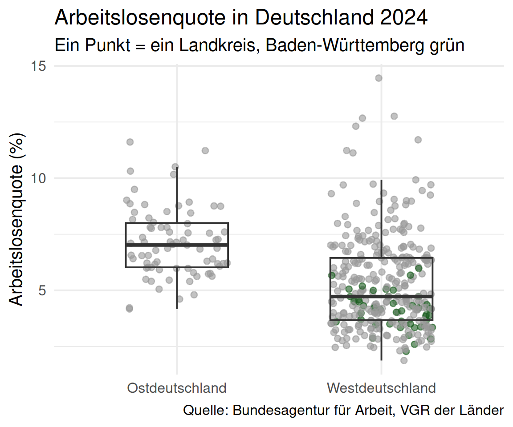
Beschreiben Sie das Schaubild
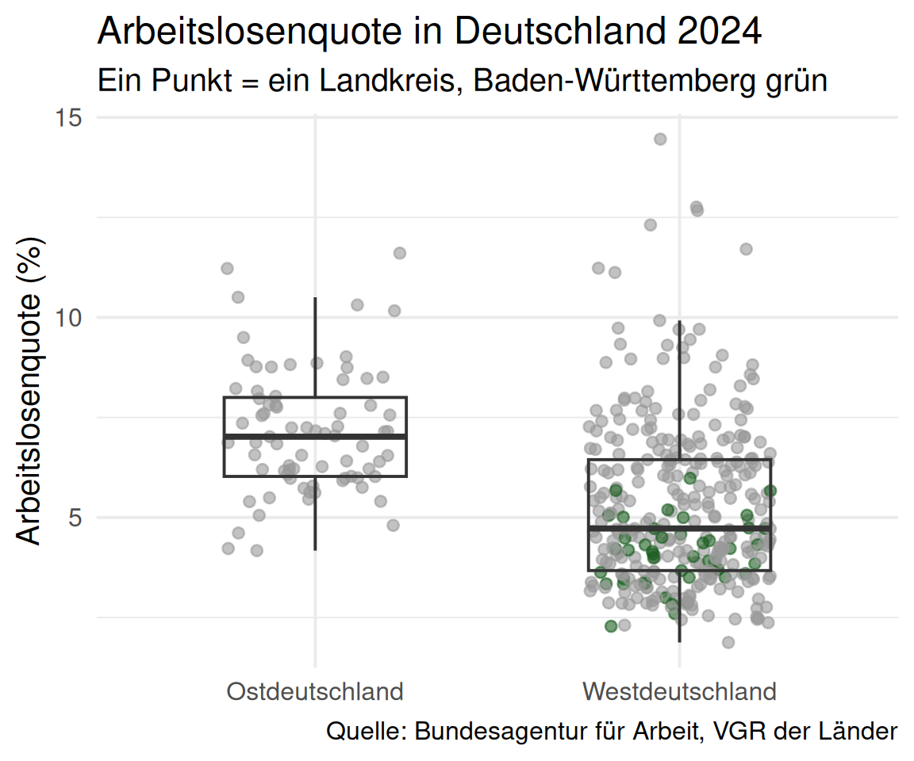
3 Min., zu zweit: Beschreiben Sie das Schaubild in drei Sätzen. Wo liegt BW?
- 77 % der Kreise in BW liegen unter dem West-Median
- Median West 4,7 % vs. Ost 7,0 %
- Selbst das 75 %-Quantil West (6,4 %) liegt unter dem Ost-Median
- Fast alle Kreise unter 10 % (Spanien: rund 11 %)
BIP pro Kopf: Unterschiede seit wann?
Gibt es auch beim BIP pro Kopf regionale Unterschiede? Und war das schon immer so?
- Bestehen die Unterschiede schon länger?
- Werden sie größer oder kleiner?
Ein hohes BIP pro Kopf kann bedeuten, dass
- viele Personen im Landkreis erwerbstätig sind, oder
- die Erwerbstätigen in Branchen mit hoher Produktivität arbeiten.
Trifft der erste Punkt zu, sollte ein hohes BIP pro Kopf mit niedriger Arbeitslosigkeit einhergehen. Und wo kann es noch herkommen? (Tipp: Bug Hunt 6)
BIP pro Kopf seit 2000
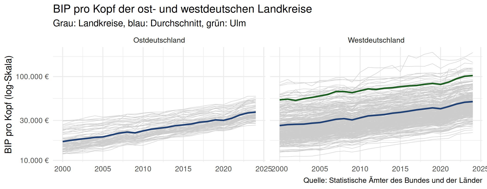
bip_zeitreihe_namen |>
filter(Jahr >= 2000) |>
group_by(ost_name, Jahr) |>
mutate(durchschnitt = mean(bip_pro_kopf)) |>
ungroup() |>
ggplot(aes(x = Jahr)) +
geom_line(aes(y = bip_pro_kopf, group = Regionalschluessel), colour = "grey80", linewidth = 0.3) +
geom_line(aes(y = durchschnitt), colour = "#1d3f73", linewidth = 1.2) +
geom_line(data = \(d) filter(d, landkreis_name == "Ulm"), aes(y = bip_pro_kopf),
colour = "#1b5e20", linewidth = 1.2) +
scale_y_log10() +
facet_wrap(~ ost_name)bip_zeitreihe_namen: BIP-Zeitreihe der Landkreise, ergänzt um Namen und ost_name aus gesamtdaten.
🔮 Holt der Osten auf?
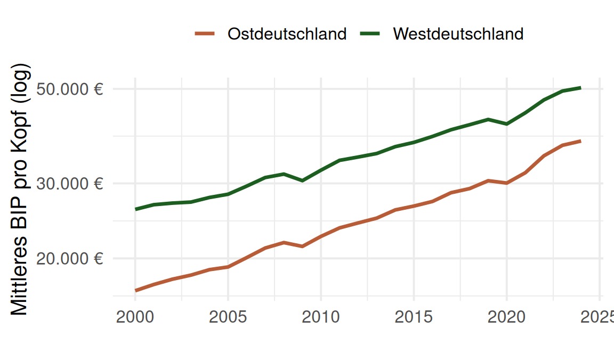
# A tibble: 3 × 3
Jahr abstand_eur ost_in_prozent_west
<dbl> <dbl> <dbl>
1 2000 9272. 64.4
2 2010 9694. 69.9
3 2024 12587. 75.0Handzeichen: Die Linien laufen fast parallel. Holt der Osten seit 2000 auf?
(a) ja (b) nein (c) der Abstand wird größer
Alle drei Antworten sind vertretbar:
- Absolut wächst der Abstand in Euro
- Relativ holt der Osten auf, aber langsam
- Log-Skala: “parallel” heißt gleicher relativer Abstand
Schätzfrage aufgelöst: (c) 75 %
Der lange Blick: ab 1992
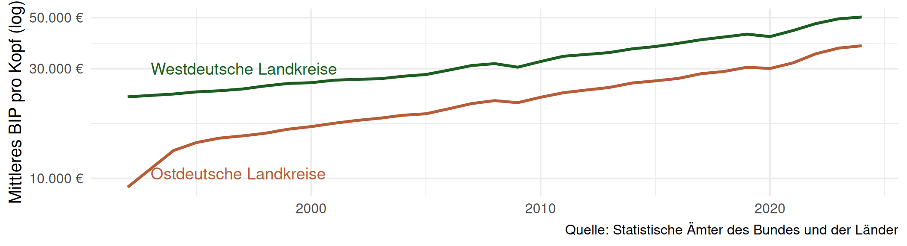
- Starke Anpassung in den 1990er Jahren, danach deutlich langsamer
- Vorsicht: Bis 1999 fehlen ganz Niedersachsen und Mecklenburg-Vorpommern, 1992 zusätzlich Sachsen und das Saarland (für 1993 gibt es keine Daten). Die Mittelwerte beziehen sich also nicht jedes Jahr auf dieselben Kreise
Wachstumsraten
Wir haben ein Panel und können das Wachstum des BIP pro Kopf für jeden Landkreis und jedes Jahr berechnen.
Lässt sich ein Aufholprozess auch an den Wachstumsraten ablesen? Was müsste dann gelten?
Wachstumsrate von Jahr \(t-1\) auf Jahr \(t\):
\[ g_t = \frac{x_t - x_{t-1}}{x_{t-1}} \times 100 \]
🐛 Bug Hunt 8: Die Wachstumsrate
Der Code aus der Case-Study des letzten Jahres:
2 Minuten: Vergleichen Sie Zeile 4 mit der Formel. Rechnen Sie im Kopf nach: Ein Landkreis verdoppelt sein BIP pro Kopf von 100 auf 200. Was gibt der Code aus?
🐛 Bug Hunt 8: Prüfung
Ein Test mit Zahlen, deren Ergebnis wir kennen:
tibble(vorjahr = c(100, 100), jetzt = c(200, 50)) |>
mutate(falsch = 100 * (jetzt - vorjahr) / jetzt,
richtig = 100 * (jetzt - vorjahr) / vorjahr)# A tibble: 2 × 4
vorjahr jetzt falsch richtig
<dbl> <dbl> <dbl> <dbl>
1 100 200 50 100
2 100 50 -100 -50Geteilt wird durch das aktuelle Jahr statt durch das Vorjahr. Kleine Raten ändern sich kaum, große werden stark verzerrt: Verdopplung → +50 %, Halbierung → −100 %.
In unseren Daten: Mainz (BioNTech) 2021 und 2023
✍️ Jetzt Sie: Bug Hunt 8 reparieren
bip_lk enthält das BIP pro Kopf aller Landkreise 2015–2024. Berechnen Sie wachstum richtig und zeigen Sie die fünf höchsten Wachstumsraten.
Hinweis
Durch lag(bip_pro_kopf) teilen, nicht durch bip_pro_kopf. Kürzer: 100 * (bip_pro_kopf / lag(bip_pro_kopf) - 1).
Zusatz: Warum group_by()?
Ohne group_by() wäre der lag() der ersten Zeile eines Landkreises das letzte Jahr des vorherigen Landkreises. Probieren Sie es aus!
Wachstumsraten: Ost und West
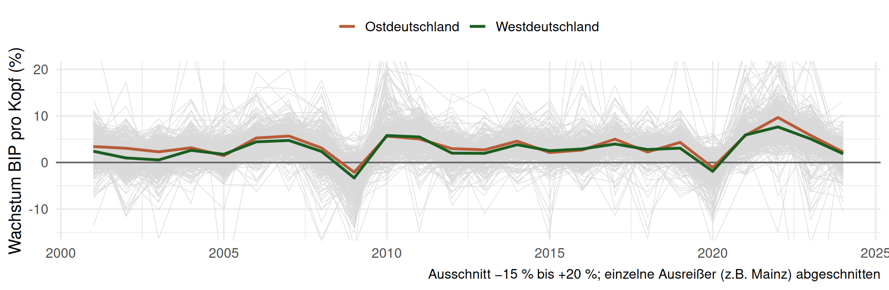
Was sehen Sie? Und warum wachsen 2022 fast alle Landkreise, im Mittel um rund 8 %?
Wachstumsraten: beschrieben
Beschreibung
- Im Mittel sehr ähnliche Wachstumsraten, Ost meist leicht darüber
- Einbrüche in der Finanzkrise 2009 und in Corona 2020 in den meisten Landkreisen
- Einzelne Landkreise mit extremen Raten: ein großes Unternehmen reicht (Mainz/BioNTech 2021, Wolfsburg/VW 2016)
Interpretation
- Leicht höhere Raten im Osten passen zum langsamen relativen Aufholen
- Für eine schnelle Angleichung sind die Unterschiede aber zu klein
- Das BIP ist nominal: 2022 ist vor allem Inflation, kein Boom
Kein schneller Aufholprozess seit 2000, aber auch kein Stillstand.
Die Verteilung 2024: Histogramm
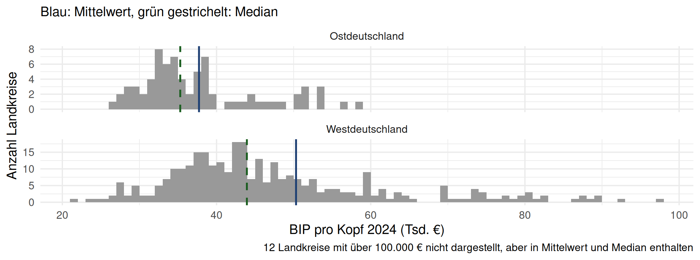
mittel_ow <- gesamtdaten |> # je eine Zeile für Ost und West
group_by(ost_name) |>
summarise(mittel = mean(bip_pro_kopf), median = median(bip_pro_kopf))
gesamtdaten |>
filter(bip_pro_kopf < 1e5) |>
ggplot(aes(x = bip_pro_kopf / 1000)) +
geom_histogram(binwidth = 1, boundary = 0) + # 1 Balken = 1.000 €
geom_vline(data = mittel_ow, aes(xintercept = mittel / 1000)) +
geom_vline(data = mittel_ow, aes(xintercept = median / 1000), linetype = "dashed") +
facet_wrap(~ ost_name, ncol = 1, scales = "free_y")Die Verteilung 2024: beschrieben
- Ost: Mittelwert 37.724 €, Median 35.292 € → schmaler, Mittelwert und Median näher beieinander
- West: Mittelwert 50.312 €, Median 43.935 € → lange rechte Flanke
- Es gibt westdeutsche Kreise mit niedrigerem BIP pro Kopf als viele ostdeutsche, aber der Großteil liegt rechts davon
Die y-Achse zeigt die Anzahl. Warum ist das beim Vergleich Ost (75 Kreise) und West (325 Kreise) problematisch? Was wäre die Alternative?
Die Alternative ist eine Kerndichte (geom_density()), ein geglättetes Histogramm mit Fläche 1. Mehr dazu und weitere Grafiktypen (z.B. Small Multiples) finden Sie in der ausformulierten Case-Study, bei Data to Viz und in der R Graph Gallery.
Interaktiv mit plotly
Wer ist der Ausreißer? Mit der Maus über einen Punkt fahren:
p_interaktiv <- gesamtdaten |>
ggplot(aes(x = ost_name, y = alo_quote)) +
geom_jitter(aes(text = paste0(landkreis_name, " (", bundesland_name, "): ", round(alo_quote, 1), " %")),
width = 0.25, height = 0, alpha = 0.6, colour = "grey40") +
geom_boxplot(alpha = 0, outlier.shape = NA, width = 0.5) +
labs(x = NULL, y = "Arbeitslosenquote (%)") + theme_minimal()
ggplotly(p_interaktiv, tooltip = "text") # Tooltip zeigt nur die Spalte "text"Funktioniert in HTML (Folien, Case-Study, Quarto-Bericht), nicht im PDF. Für den Projektbericht: statische Grafik zusätzlich bereithalten.
Karten
Grundlagen ✔ → Überblick ✔ → Tabellen ✔ → Grafiken ✔ → Karten → Zusammenhänge
Nach diesem Abschnitt können Sie …
- eine Karte mit
geom_sf()lesen und anpassen, - eine stetige Variable mit
cut()lückenlos in Klassen einteilen, - Legende und Farbskala einer Karte kritisch prüfen.
Verschuldung und Arbeitslosigkeit
Warum könnte die Verschuldung der öffentlichen Haushalte mit einer hohen Arbeitslosenquote zusammenhängen?
- Strukturschwache Regionen: weniger Unternehmen → weniger Gewerbesteuer
- Gleichzeitig höhere Sozialausgaben (Kosten der Unterkunft für SGB-II-Leistungsbeziehende tragen die Kommunen)
- Folge: Kredite statt Investitionen → Region wird für Unternehmen noch unattraktiver
Ursache oder Folge? Beides ist plausibel. Mit deskriptiver Statistik können wir das nicht trennen.
Karten in R
Die Geodaten (landkreise, bundesland) aus Teil 1 sind sf-Objekte: eine Tabelle mit einer Spalte geometry.
🔮 Warum steht landkreise zuerst im left_join() und nicht gesamtdaten?
Das Ergebnis übernimmt die Klasse des linken Datensatzes. Nur wenn links ein sf-Objekt steht, ist das Ergebnis wieder eine Karte.
Schulden im Verhältnis zum BIP
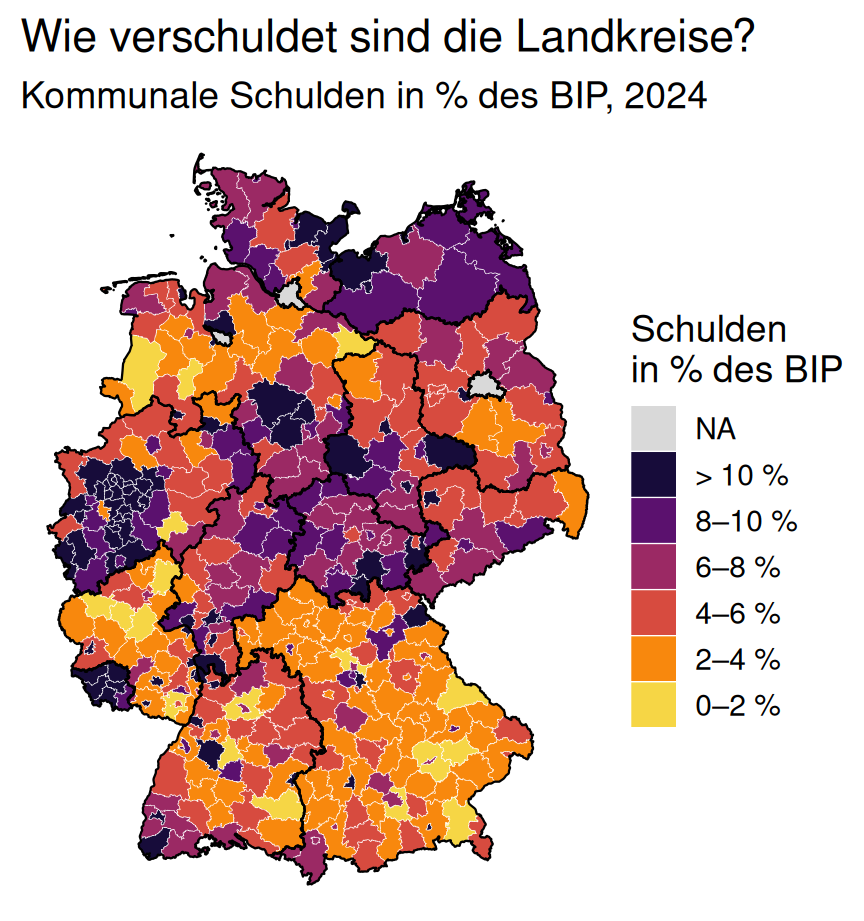
3 Minuten, zu zweit: Beschreiben und interpretieren Sie die Karte. Welche Regionen fallen auf?
Grau: Stadtstaaten. Ihre Schulden sind Landesschulden und nicht in der Gemeindestatistik.
ggplot(karten_daten) +
geom_sf(aes(fill = schulden_klasse), colour = "white", linewidth = 0.1) +
scale_fill_viridis_d(option = "inferno", begin = 0.1, end = 0.9, direction = -1,
name = "Schulden\nin % des BIP", na.value = "grey85",
guide = guide_legend(reverse = TRUE)) +
geom_sf(data = bundesland, fill = NA, colour = "black", linewidth = 0.4) + # Landesgrenzen
labs(title = "Wie verschuldet sind die Landkreise?") +
theme_void()Schulden: beschrieben
Beschreibung
- Niedrig verschuldet (Landesebene, Schulden/BIP): Bayern, Baden-Württemberg, Rheinland-Pfalz, Brandenburg
- Hoch verschuldet: Saarland, Mecklenburg-Vorpommern, Nordrhein-Westfalen, Sachsen-Anhalt
- Kein klares Ost-West-Muster: Brandenburg gering, Sachsen im Mittelfeld, Sachsen-Anhalt und Mecklenburg-Vorpommern hoch
Interpretation
- Ruhrgebiet und Saarland: Strukturwandel seit dem Ende von Kohle und Stahl, hohe Sozialausgaben, lange Phase von Kassenkrediten
- Achtung, Pendler: Das BIP wird am Arbeitsort gemessen. Umlandkreise mit vielen Auspendler:innen haben ein kleines BIP und wirken dadurch verschuldeter, als sie sind
🐛 Bug Hunt 9: Die Arbeitslosen-Karte
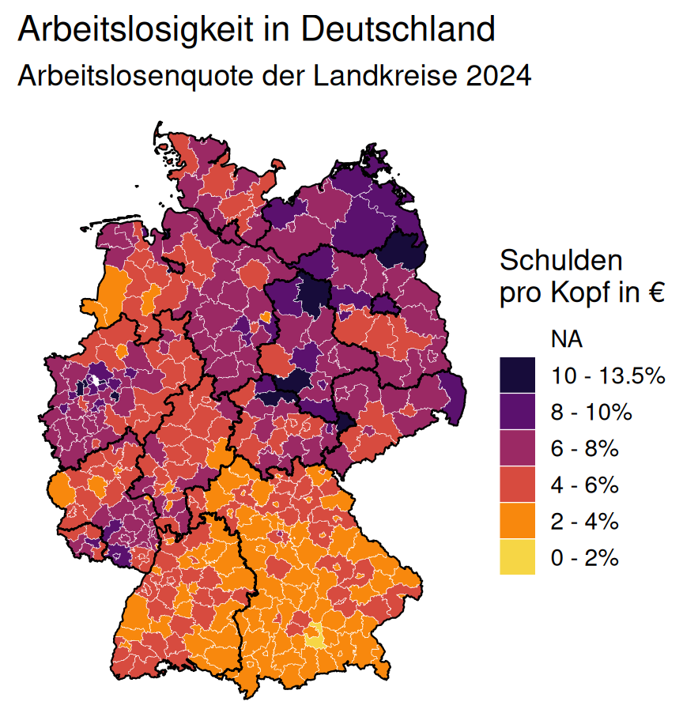
Die Karte aus den Folien des letzten Jahres. Der Code läuft ohne Fehler und ohne Warnung.
2 Minuten, zu zweit: In dieser Karte stecken zwei stille Fehler. Lesen Sie die Legende Wort für Wort. Und: Wo ist der Kreis mit der höchsten Arbeitslosenquote?
🐛 Bug Hunt 9: Prüfung
karten_daten_alt |>
sf::st_drop_geometry() |>
filter(is.na(alo_quote_lk)) |>
select(landkreis_name, alo_quote) landkreis_name alo_quote
1 Gelsenkirchen 14.45649- Legende: “Schulden pro Kopf in €” auf einer Karte zur Arbeitslosenquote. Copy & Paste von der Schuldenkarte.
- Lücke:
case_when()ohne Fall für Werte über 13,5 % →NA. Ausgerechnet der Extremwert verschwindet.
Nach jeder Klasseneinteilung: count(klasse). Eine NA-Klasse, die es nicht geben sollte, fällt sofort auf.
✍️ Jetzt Sie: Klassen ohne Lücke
Ersetzen Sie case_when() durch cut(), sodass jeder Landkreis eine Klasse bekommt, auch wenn nächstes Jahr ein Kreis über 15 % liegt. Die letzte Zeile soll die Klassen zählen.
Hinweis
cut(alo_quote, breaks = c(0, 2, 4, 6, 8, 10, Inf)). Mit Inf als oberer Grenze gibt es keine Lücke nach oben. Optional: labels = c("0–2 %", ..., "> 10 %").
Schulden und Arbeitslosigkeit im Vergleich
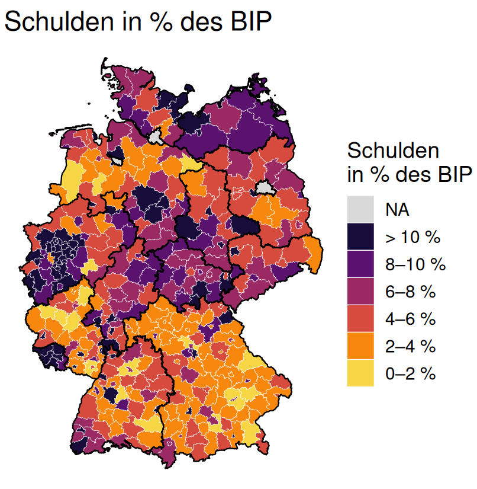
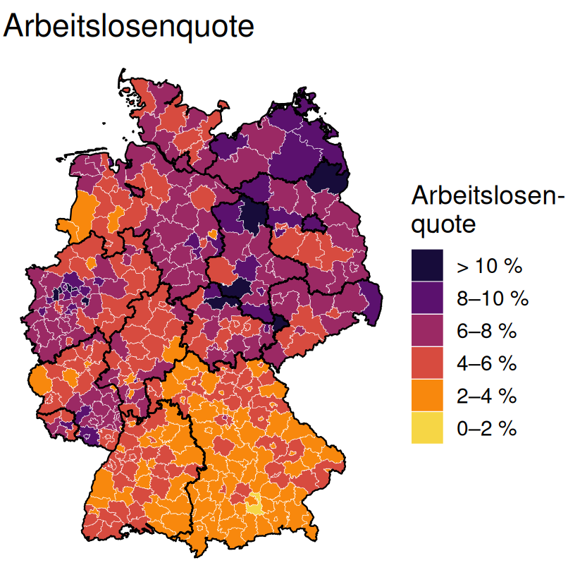
Hängen Verschuldung und Arbeitslosigkeit zusammen? Wie sicher sind Sie sich, nur mit dem Auge?
Was die Karten zeigen und was nicht
- Ost-West ist bei der Arbeitslosigkeit deutlich sichtbar, bei den Schulden kaum
- Im Westen fallen beide Karten zusammen: Ruhrgebiet und Saarland sind hoch verschuldet und haben hohe Arbeitslosigkeit
- Verschuldung könnte ein erklärender Faktor sein, aber “fällt zusammen” ist keine Zahl
Das Auge ist schlecht darin, zwei Farbskalen zu vergleichen. Für Zusammenhänge brauchen wir Streudiagramm und Korrelation → nächster Abschnitt.
Gute Karten: kontrastreiche, farbenblind-taugliche Palette (viridis), wenige Klassen, Grenzen per cut() lückenlos, fehlende Werte erklärt, Legende gelesen.
Zusammenhänge
Grundlagen ✔ → Überblick ✔ → Tabellen ✔ → Grafiken ✔ → Karten ✔ → Zusammenhänge
Nach diesem Abschnitt können Sie …
- einen Korrelationskoeffizienten aus einem Streudiagramm grob schätzen,
- Korrelationen in R berechnen, auch getrennt nach Gruppen,
- erklären, was eine Korrelation nicht aussagt.
Die Korrelation
Bisher: univariat, eine Variable. Jetzt: bivariat, der Zusammenhang zweier Variablen.
\[ r = \frac{1}{n} \sum_{i=1}^n \left( \frac{x_i-\mu_x}{\sigma_x} \right)\left( \frac{y_i-\mu_y}{\sigma_y} \right) \]
mit den Mittelwerten \(\mu_x, \mu_y\) und den Standardabweichungen \(\sigma_x, \sigma_y\). r sagt, wie eng die Punkte um eine Gerade liegen, nicht wie steil sie ist.
| \(|r|\) | Zusammenhang (Faustregel) |
|---|---|
| 0,1 – 0,3 | schwach |
| 0,3 – 0,5 | mittel |
| 0,5 – 0,8 | stark |
| > 0,8 | sehr stark |
Was bedeutet das Produkt in der Summe, wenn ein Landkreis bei \(x\) und \(y\) über dem Mittelwert liegt? Und wenn nur bei einem?
🔮 Schätzen Sie r
Arbeitslosigkeit und Verschuldung
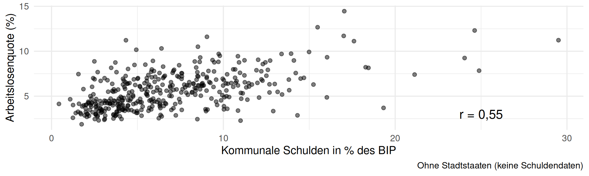
Deutlich positiver Zusammenhang: Landkreise mit hohen Schulden im Verhältnis zum BIP haben tendenziell eine höhere Arbeitslosenquote.
annotate() statt geom_text(aes(...)): Ein fester Text wird so einmal gezeichnet und nicht 400-mal übereinander.
✍️ Jetzt Sie: Welche Schulden-Kennzahl?
Berechnen Sie die Korrelation der Arbeitslosenquote mit drei Kennzahlen: Schulden in % des BIP, Schulden pro Kopf, BIP pro Kopf. Ergebnis als eine Zeile mit drei Spalten.
Zusatz: Berechnen Sie r_anteil getrennt für Ost und West (group_by(ost_name) vor summarise()).
Hinweis
Die Spalten heißen Schulden_pro_kopf_lk und bip_pro_kopf. Ohne use = "complete.obs" liefert cor() bei fehlenden Werten NA.
Die Wahl der Kennzahl entscheidet mit
gesamtdaten |>
summarise(r_anteil = r_c(alo_quote, anteil_schulden),
r_pro_kopf = r_c(alo_quote, Schulden_pro_kopf_lk),
r_bip = r_c(alo_quote, bip_pro_kopf))# A tibble: 1 × 3
r_anteil r_pro_kopf r_bip
<dbl> <dbl> <dbl>
1 0.554 0.195 -0.426Pro Kopf ist der Zusammenhang schwach, in % des BIP stark. Woran liegt das? Wer hat die höchsten Schulden pro Kopf?
Wer hat die höchsten Schulden pro Kopf?
gesamtdaten |>
slice_max(Schulden_pro_kopf_lk, n = 4) |>
select(landkreis_name, Schulden_pro_kopf_lk, bip_pro_kopf, anteil_schulden, alo_quote)# A tibble: 4 × 5
landkreis_name Schulden_pro_kopf_lk bip_pro_kopf anteil_schulden alo_quote
<chr> <dbl> <dbl> <dbl> <dbl>
1 Darmstadt 18911. 97917. 19.3 3.70
2 Frankfurt am Main 12707. 126718. 10.0 3.53
3 Mülheim an der Ruhr 12065. 48484. 24.9 7.84
4 Ulm 11334. 102934. 11.0 2.28- Überwiegend reiche Städte mit niedriger Arbeitslosigkeit (Darmstadt, Frankfurt, Ulm!). Sie drücken die Korrelation pro Kopf.
- Auch gemessen am BIP sind sie überdurchschnittlich verschuldet. Aber das Teilen durch das BIP schiebt vor allem strukturschwache Kreise mit kleinem BIP nach oben (Mülheim, Oberhausen, Herne), und die haben hohe Arbeitslosigkeit.
Beide Kennzahlen sind legitim. Aber wer nur eine zeigt, sollte begründen, warum diese.
🐛 Bug Hunt 10: Die KI-Interpretation
Chat AI, gefragt nach einer Interpretation des Streudiagramms:
“Die Korrelation von r = 0,55 belegt einen starken Zusammenhang: Hohe Schulden verursachen Arbeitslosigkeit. Steigt der Schuldenanteil um einen Prozentpunkt, steigt die Arbeitslosenquote um 0,55 Prozentpunkte. Dieser Zusammenhang gilt für ganz Deutschland.”
3 Minuten, zu zweit: Klingt kompetent. Finden Sie drei Fehler. Für einen davon brauchen Sie Code: Welchen?
🐛 Bug Hunt 10: Prüfung
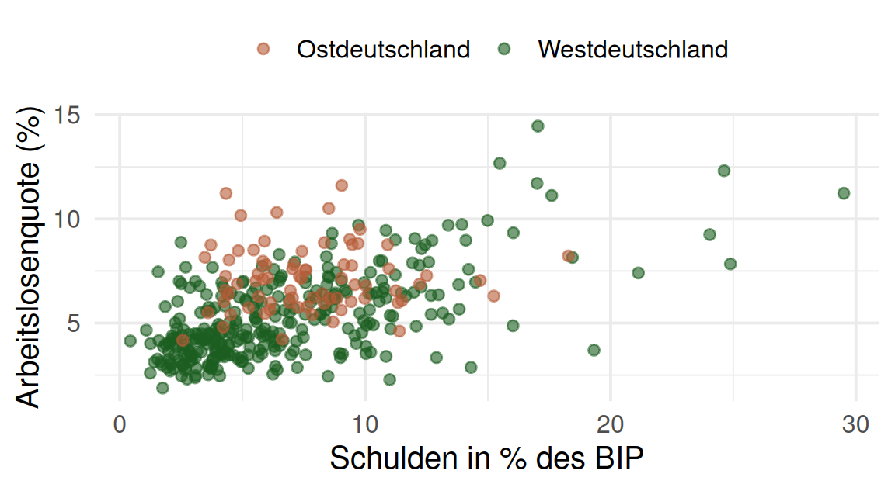
- “verursachen”: Korrelation ist keine Kausalität. Arbeitslosigkeit kann ebenso Schulden verursachen (Sozialausgaben), oder ein Strukturwandel beides.
- “um 0,55 Prozentpunkte”: r ist keine Steigung. Das leistet erst die Regression (nächstes Semester).
- “für ganz Deutschland”: Im Osten gibt es praktisch keinen Zusammenhang. Die Gesamtkorrelation wird vom Westen getragen.
Interpretation der Korrelation
- r hat keine quantitative Interpretation (“um wie viel?”)
- r misst nur lineare Zusammenhänge und reagiert auf Ausreißer
- Nützlich, um stark korrelierte Variablen zu finden. Das ist für die Regression wichtig (Stichwort Multikollinearität)
In Arbeiten steht meist eine Korrelationsmatrix:
alo_quote anteil_schulden bip_pro_kopf wachstum
alo_quote 1.00 0.55 -0.43 0.10
anteil_schulden 0.55 1.00 -0.06 0.12
bip_pro_kopf -0.43 -0.06 1.00 0.02
wachstum 0.10 0.12 0.02 1.00Nächstes Semester (Teil 3 der Case-Study): lineare Regression. Deren Koeffizienten lassen sich direkt interpretieren.
Abschluss
Checkliste: Tabellen und Grafiken prüfen
Bevor Sie eine Tabelle oder Grafik zeigen, egal ob von Chat AI oder von Ihnen:
1. Kennzahl = Überschrift? Mittel der Kreise oder Quote des Landes? (Bremen)
2. Zähler und Nenner passen? Gleiches Gebiet, gleiche Zählweise. (BH 6)
3. Formel getestet? Mit Zahlen, deren Ergebnis Sie kennen. (BH 8)
4. Nichts per Hand abgezählt? Zeilen über Inhalt wählen, nicht über Position. (BH 7)
5. Klassen lückenlos? cut() mit Inf, danach count(). (BH 9)
6. Legende und Achsen gelesen? Titel, Einheit, Log-Skala. (BH 9)
7. Fehlendes erklärt? Jedes NA, jeder abgeschnittene Wert in der Caption. (Stadtstaaten)
8. Aussage gedeckt? Korrelation ≠ Kausalität, und gilt sie für alle Gruppen? (BH 10)
Keiner der Bug Hunts in Teil 2 hat eine Fehlermeldung erzeugt.
Zusammenfassung und Ausblick
Was haben wir gelernt?
- Daten beschreiben: Tabellen mit
skimrundkableExtra - Daten zeigen: Punkte + Boxplot, Zeitreihen, Histogramme, Karten, interaktive Grafiken
- Zusammenhänge quantifizieren: Korrelation, auch getrennt nach Gruppen
- Prüfen: Kennzahl, Nenner, Formel, Klassen, Legende, Aussage
Was wir gesehen haben: Ost und West unterscheiden sich auch 2024, 35 Jahre nach dem Mauerfall, deutlich. Aber auch im Westen gibt es Regionen mit hoher Arbeitslosigkeit und hohen Schulden.
Dieses Semester: deskriptive Statistik. Nächstes Semester (Teil 3): induktive Statistik und lineare Regression. Dann fragen wir, wie stark Schulden, BIP und Arbeitslosigkeit zusammenhängen, wenn wir andere Faktoren konstant halten.
Prompting für Grafiken
Die Hinweise aus Teil 1 gelten weiter (Aufgabe, Instruktionen, Kontext; komplexe Aufgaben zerlegen). Für Grafiken zusätzlich:
- Frage zuerst: “Ich möchte zeigen, ob … Welcher Grafiktyp eignet sich?”
- Daten mitgeben:
glimpse()-Output einfügen, dann rät Chat AI keine Spaltennamen - Gezielt nachbessern: “Die Legende soll … heißen”, “Werte über 100.000 € abschneiden und in der Caption erwähnen”
- Interpretation selbst schreiben und dann von Chat AI prüfen lassen: “Welche Aussagen in meinem Text sind durch die Grafik nicht gedeckt?”
Chat AI schreibt Ihnen in Sekunden eine überzeugende Interpretation. Bug Hunt 10 zeigt, wie viel darin falsch sein kann.
Hausaufgabe: Eigene Grafik erstellen
Ziel: Eine aussagekräftige Grafik zum Einkommen in Deutschland erstellen und interpretieren. Start jetzt (5 Minuten): Gruppen bilden und Fragestellung festlegen.
Daten: einkommen.rds (case-study/data/): Bruttolöhne und -gehälter je Arbeitnehmer:in (vgl. Übung zu Teil 1), nominal, am Arbeitsort, 2000–2024. Enthält Bund, Länder, Regierungsbezirke und Kreise.
- Gruppen von 4–5 Personen
- Frage wählen, z.B.: Holt der Osten beim Einkommen schneller auf als beim BIP pro Kopf? Wie verteilen sich die Einkommen 2024? Wo liegen die Einkommen hoch, wo niedrig (Karte)?
- Grafik erstellen: Mit
gesamtdatenverbinden; Inspiration in der R Graph Gallery und der Case-Study; Chat AI erlaubt - Checkliste anwenden: mindestens Punkte 1, 2, 6 und 7 schriftlich beantworten
- Hochladen: Code + Grafik + drei Sätze Interpretation über das Google-Formular
- Feedback-Runde zu Beginn der nächsten Sitzung: anonymes Feedback von Kommiliton:innen und mir
📱 Kahoot-Checkpoint 2: Grafiken, Karten, Zusammenhänge
kahoot.it · PIN am Beamer
10 Fragen, ca. 8 Minuten. Auch hier: erst nachdenken, dann drücken.
- Jitter-Plot und Log-Achse lesen
- Holt der Osten auf? Relativ vs. absolut
- Bug Hunt 8: die Wachstumsrate (und
group_by()) - Bug Hunt 9: die Lücke in den Klassen
- Bug Hunt 10: Was eine Korrelation aussagt und was nicht
- Schulden pro Kopf oder in % des BIP?
Anhang: Zum Selbststudium
✍️ Stadtstaaten-Join reparieren
alo_lk enthält Arbeitslose je Landkreis, bip_2024 das BIP 2024 mit den Original-Schlüsseln aus der Excel-Datei. Passen Sie bip_2024 vor dem Join so an, dass Hamburg und Berlin ein bip_pro_kopf bekommen.
Hinweis
Aus "02" muss "02000" werden, aus "11" muss "11000" werden. if_else(Regionalschluessel %in% c("02", "11"), paste0(...), ...) in einem mutate(). Die Variante aus Teil 1 mit bind_rows() funktioniert auch.
✍️ Ihr Bundesland hervorheben
Heben Sie statt Baden-Württemberg ein anderes Bundesland hervor, z.B. Ihr Heimatbundesland. Passen Sie auch den Untertitel an.
Zusatz: Zeichnen Sie mit geom_hline() den westdeutschen Median ein.
Hinweis
Den Namen in Zeile 2 und im subtitle ändern. Die Namen müssen exakt stimmen: unique(gesamtdaten$bundesland_name) zeigt alle.
Lösung (Beispiel NRW)
gesamtdaten |>
mutate(hervor = bundesland_name == "Nordrhein-Westfalen") |>
ggplot(aes(x = ost_name, y = alo_quote)) +
geom_jitter(aes(colour = hervor), width = 0.25, height = 0, alpha = 0.6) +
geom_boxplot(alpha = 0, outlier.shape = NA, width = 0.5) +
scale_colour_manual(values = c("grey60", "#1b5e20"), guide = "none") +
labs(subtitle = "Nordrhein-Westfalen grün", x = NULL, y = "Arbeitslosenquote (%)") +
theme_minimal()NRW streut über fast den ganzen westdeutschen Bereich: Münsterland unten, Ruhrgebiet ganz oben.
Arbeitslosigkeit, BIP und Schulden je Bundesland
Mittel und Streuung über die Landkreise |
||||||
|---|---|---|---|---|---|---|
Arbeitslosenquote (%) |
BIP pro Kopf (€) |
Schulden pro Kopf (€) |
||||
| Bundesland | Mittel | SD | Mittel | SD | Mittel | SD |
| Bayern | 3,60 | 0,80 | 55.133 | 24.310 | 2.422 | 1.761 |
| Baden-Württemberg | 4,10 | 0,83 | 55.750 | 18.616 | 3.461 | 2.721 |
| Hessen | 5,50 | 1,28 | 52.582 | 22.246 | 4.329 | 3.815 |
| Rheinland-Pfalz | 5,84 | 1,52 | 43.915 | 15.810 | 2.666 | 2.586 |
| Schleswig-Holstein | 5,98 | 0,80 | 43.454 | 10.333 | 3.530 | 1.474 |
| Niedersachsen | 6,18 | 1,77 | 46.411 | 26.052 | 2.757 | 1.890 |
| Saarland | 6,33 | 1,85 | 38.998 | 9.228 | 5.136 | 1.124 |
| Sachsen | 6,47 | 0,88 | 38.130 | 7.508 | 2.556 | 1.179 |
| Thüringen | 6,68 | 1,64 | 35.495 | 7.258 | 2.827 | 637 |
| Brandenburg | 7,06 | 1,63 | 40.426 | 9.206 | 2.457 | 1.313 |
| Nordrhein-Westfalen | 7,36 | 2,33 | 45.915 | 14.358 | 4.846 | 2.613 |
| Mecklenburg-Vorpommern | 7,94 | 1,20 | 39.548 | 8.745 | 4.393 | 2.267 |
| Sachsen-Anhalt | 8,09 | 1,48 | 36.335 | 5.195 | 3.121 | 1.730 |
| Bitte beachten: | ||||||
| Ohne Stadtstaaten (keine Schuldendaten). Ostdeutsche Bundesländer grau hinterlegt. | ||||||
Was lernen wir aus dieser Tabelle? Und warum steht oben “über die Landkreise”?
Arbeitslosenquote, BIP und Schulden: beschrieben
- Länder mit niedriger Arbeitslosigkeit haben im Mittel ein hohes BIP pro Kopf (Bayern, Baden-Württemberg, Hessen)
- Ostdeutsche Landkreise: BIP pro Kopf im Mittel unter 41.000 €. Die Grenze verschwimmt aber: Das Saarland liegt unter Brandenburg
- Bei den Schulden gibt es kein Ost-West-Muster: Bayern, Brandenburg und Sachsen niedrig; Saarland, NRW, Mecklenburg-Vorpommern und Hessen hoch
Allein mit Mittelwert und Standardabweichung lernen wir schon viel über regionale Unterschiede. Ob sie zusammenhängen, klären wir mit Grafiken und Korrelationen.
Auch Zeitreihen passen in Tabellen. Ein Beispiel mit dem Paket gt (BIP pro Kopf 1992, 2007, 2024 je Bundesland) finden Sie in der ausformulierten Case-Study.
Arbeitslosigkeit und BIP-Wachstum
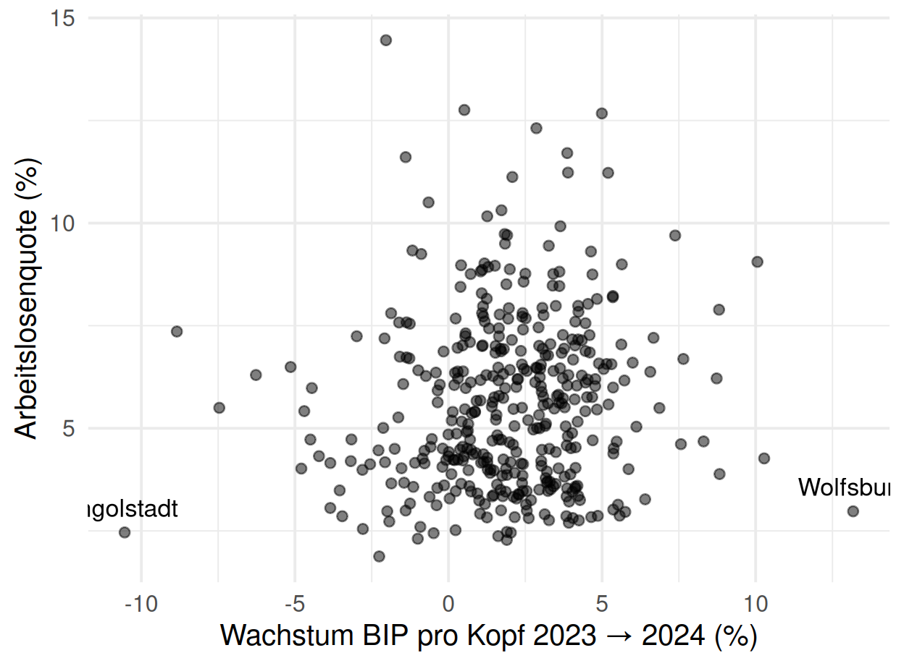
Projektkurs Data Science · Case-Study Teil 2